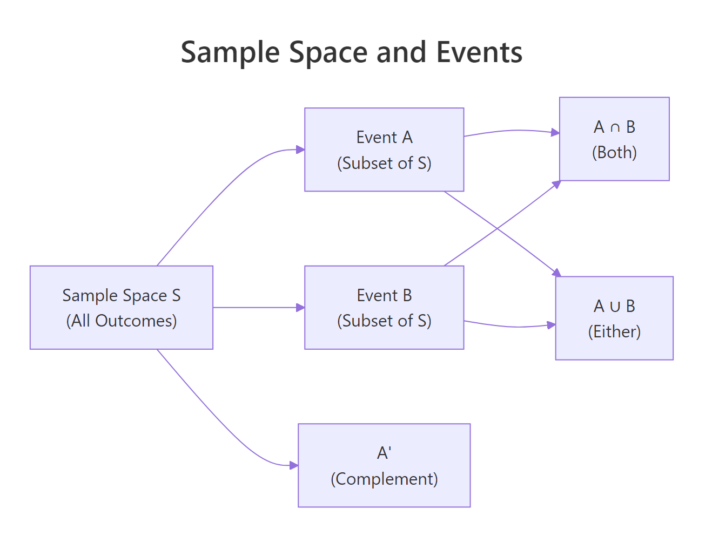
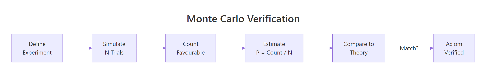
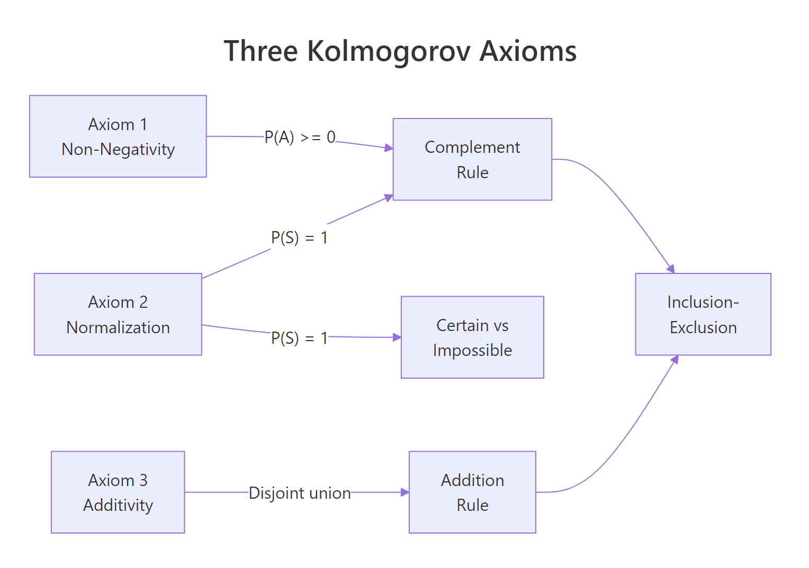

Probability Axioms in R: Prove the Rules of Probability via Monte Carlo Simulation
By Selva Prabhakaran · Published April 18, 2026 · Last updated April 18, 2026
The three Kolmogorov axioms, non-negativity, normalization, and additivity, are the foundation every probability calculation rests on. In this tutorial you will state each axiom, then prove it holds by running Monte Carlo simulations in R with sample().
What Is a Sample Space and Why Does It Matter?
When you flip a coin, the sample space is {Heads, Tails}. When you roll a die, it is {1, 2, 3, 4, 5, 6}. A sample space is the complete list of every possible outcome of an experiment. Events are subsets of that space, "roll an even number" is the event {2, 4, 6}.
Let's build both concepts in R and compute probabilities from them.
RClassical die probability calculation
# Define the sample space for a fair dieS <-1:6# Define two eventsevent_even <-c(2, 4, 6)event_gt4 <-c(5, 6)# Classical probability = favourable outcomes / total outcomesp_even <-length(event_even) /length(S)p_gt4 <-length(event_gt4) /length(S)cat("Sample space:", S, "\n")#> Sample space: 1 2 3 4 5 6cat("P(even) =", p_even, "\n")#> P(even) = 0.5cat("P(>4) =", p_gt4, "\n")#> P(>4) = 0.3333333
The classical formula works perfectly when every outcome is equally likely. P(even) = 3/6 = 0.5 because three of the six faces are even. P(greater than 4) = 2/6 ≈ 0.333 because only 5 and 6 qualify.
But what if you don't trust the formula? You can verify it by running the experiment thousands of times and counting.
With 100,000 simulated rolls, the estimated probabilities land within a whisker of the theoretical values. That's the core idea behind Monte Carlo simulation, repeat an experiment many times and let the proportions converge to the true probability.
Key Insight
A sample space must be exhaustive and mutually exclusive. Every possible outcome appears exactly once. If you accidentally list {1, 2, 3, 4, 5} (missing 6) or {1, 2, 2, 3, 4, 5, 6} (duplicate 2), your probability calculations will be wrong.
Try it: Define the sample space for flipping two coins simultaneously (four outcomes: HH, HT, TH, TT). Compute P(at least one head) by counting favourable outcomes.
RExercise: Two-coin sample space
# Try it: two-coin sample spaceex_S <-c("HH", "HT", "TH", "TT")# Favourable outcomes for "at least one head":ex_favourable <-# your code here# Compute probability:ex_p <-# your code here
Click to reveal solution
RTwo-coin sample space solution
ex_S <-c("HH", "HT", "TH", "TT")ex_favourable <-c("HH", "HT", "TH")ex_p <-length(ex_favourable) /length(ex_S)cat("P(at least one head) =", ex_p, "\n")#> P(at least one head) = 0.75
Explanation: Three of the four equally likely outcomes contain at least one head, so P = 3/4 = 0.75.
What Are the Three Kolmogorov Axioms?
In 1933, the mathematician Andrey Kolmogorov formalised probability with just three rules. Everything in probability, from coin flips to machine learning models, follows from these three axioms.
Axiom 1, Non-negativity: The probability of any event is zero or positive. No event can have a negative probability.
$$P(A) \geq 0 \quad \text{for every event } A$$
Axiom 2, Normalization: The probability of the entire sample space is exactly 1. Something must happen.
$$P(S) = 1$$
Axiom 3, Additivity: If two events cannot happen at the same time (they are disjoint), the probability of either one happening equals the sum of their individual probabilities.
$$\text{If } A \cap B = \emptyset, \quad P(A \cup B) = P(A) + P(B)$$
All three axioms check out. The individual face probabilities are positive (axiom 1), they sum to exactly 1 (axiom 2), and disjoint event probabilities add correctly (axiom 3).

Figure 1: Sample space, events, and set operations.
Note
These three simple rules generate all of probability. Every formula you'll encounter later, the complement rule, Bayes' theorem, the law of total probability, can be derived from just these three axioms.
Try it: A bag contains 5 red, 3 blue, and 2 green marbles (10 total). Simulate 50,000 draws and verify all three axioms: every colour probability is ≥ 0, probabilities sum to 1, and P(red or green) = P(red) + P(green) since they are disjoint.
RExercise: Verify axioms on marble bag
# Try it: marble bag, verify all three axiomsset.seed(202)ex_bag <-c(rep("red", 5), rep("blue", 3), rep("green", 2))ex_draws <-sample(ex_bag, size =50000, replace =TRUE)# Axiom 1: all >= 0?# Axiom 2: sum to 1?# Axiom 3: P(red or green) = P(red) + P(green)?# your code here
Explanation: Red and green are disjoint events (a marble can't be both), so their probabilities add. The simulated values match, confirming axiom 3.
How Does Monte Carlo Simulation Prove a Probability Rule?
Monte Carlo simulation estimates probability by repeating an experiment thousands of times and counting how often the event occurs. The law of large numbers guarantees that this proportion converges to the true probability as the number of trials grows.
Here's the recipe: simulate → count → divide → compare to theory. Let's watch convergence happen in real time by flipping a fair coin.
RLaw of large numbers convergence
# Watch P(Heads) converge as we flip more coinsset.seed(303)flips <-sample(c("H", "T"), size =100000, replace =TRUE)running_p <-cumsum(flips =="H") /seq_along(flips)# Show convergence at key milestonesns <-c(10, 100, 1000, 10000, 100000)estimates <- running_p[ns]cat(" N flips | Est. P(H) | Error from 0.5\n")cat(" --------|-----------|---------------\n")for (i inseq_along(ns)) {cat(sprintf(" %7d | %9.5f | %+.5f\n", ns[i], estimates[i], estimates[i] -0.5))}#> N flips | Est. P(H) | Error from 0.5#> --------|-----------|---------------#> 10 | 0.60000 | +0.10000#> 100 | 0.54000 | +0.04000#> 1000 | 0.51800 | +0.01800#> 10000 | 0.50440 | +0.00440#> 100000 | 0.50054 | +0.00054
At 10 flips, the estimate is off by 0.10. At 100,000 flips, the error shrinks to just 0.0005. That's convergence in action, more trials mean a more precise estimate.

Figure 2: The Monte Carlo verification workflow: define, simulate, count, compare.
This is exactly how we'll verify each axiom in the sections ahead. We'll define an experiment, simulate it many times, compute proportions, and check that the axiom's prediction matches our simulation.
Tip
Always call set.seed() before any simulation so your results are reproducible. Different seeds give different random sequences, but the long-run proportions always converge to the same true probability.
Try it: Estimate P(sum of two dice = 7) with 50,000 simulations. The theoretical answer is 6/36 ≈ 0.1667 (six ways to make 7 out of 36 possible outcomes).
RExercise: Probability of sum seven
# Try it: P(sum of two dice = 7)set.seed(404)ex_die1 <-sample(1:6, size =50000, replace =TRUE)ex_die2 <-sample(1:6, size =50000, replace =TRUE)ex_p_seven <-# your code herecat("Simulated P(sum=7) =", ex_p_seven, "\n")#> Expected: ~0.1667
Explanation: We roll two independent dice 50,000 times, sum each pair, and count the proportion that equals 7. The result is very close to the theoretical 6/36.
How Do You Verify Axiom 1 (Non-Negativity) in R?
Axiom 1 says every event has a probability of zero or more, no negative probabilities exist. This sounds obvious, but it's the mathematical guarantee that anchors the rest of probability. Without it, the complement rule and addition rule would collapse.
$$P(A) \geq 0 \quad \text{for every event } A$$
Let's check it exhaustively. We'll simulate 100,000 die rolls and compute the probability for every event we can think of, including an impossible one.
RVerify axiom 1 non-negativity
# Verify Axiom 1: every event probability >= 0set.seed(501)rolls <-sample(1:6, size =100000, replace =TRUE)# Build a list of eventsevent_list <-list("Face = 1"=1,"Face = 6"=6,"Even"=c(2, 4, 6),"Odd"=c(1, 3, 5),"Greater > 4"=c(5, 6),"Less <= 2"=c(1, 2),"All faces"=1:6,"Roll a 7"=7# impossible event)cat("Event | P(event) | >= 0?\n")cat("-----------------|----------|------\n")for (name innames(event_list)) { p <-mean(rolls %in% event_list[[name]])cat(sprintf("%-17s| %.5f | %s\n", name, p,ifelse(p >=0, "✓", "✗")))}#> Event | P(event) | >= 0?#> -----------------|----------|------#> Face = 1 | 0.16702 | ✓#> Face = 6 | 0.16761 | ✓#> Even | 0.50073 | ✓#> Odd | 0.49927 | ✓#> Greater > 4 | 0.33347 | ✓#> Less <= 2 | 0.33205 | ✓#> All faces | 1.00000 | ✓#> Roll a 7 | 0.00000 | ✓
Every single probability is at least zero. The impossible event "roll a 7" gets P = 0 (zero is still non-negative), and every other event gets a positive proportion. Axiom 1 holds across the board.
Key Insight
P(A) = 0 means the event is impossible in this experiment. Rolling a 7 on a standard die can never happen, so its probability is zero. But zero is still non-negative, axiom 1 is satisfied.
Try it: Simulate drawing from a standard deck of 52 cards (represented as numbers 1 through 52). Verify that P(draw card 53) = 0 and P(draw any card from 1 to 52) > 0.
RExercise: Non-negativity on card deck
# Try it: deck of cards, non-negativity checkset.seed(502)ex_deck <-1:52ex_draws2 <-sample(ex_deck, size =50000, replace =TRUE)# P(card 53), impossible:ex_p_53 <-# your code here# P(any card 1-52), certain:ex_p_any <-# your code herecat("P(card 53) =", ex_p_53, " (should be 0)\n")cat("P(card 1-52) =", ex_p_any, " (should be > 0)\n")
Explanation: Card 53 doesn't exist in a 52-card deck, so its probability is 0. Every draw must produce a card between 1 and 52, so that probability is 1. Both are ≥ 0.
How Do You Verify Axiom 2 (Normalization) in R?
Axiom 2 says the probability of the entire sample space is exactly 1. In plain language: something must happen. If you've listed every possible outcome, their probabilities must add up to 1.
$$P(S) = 1$$
This axiom ties probability to certainty. It's the reason we can say "there's a 30% chance of rain" and implicitly know there's a 70% chance of no rain, because the total must be 100%.
RVerify axiom 2 normalization
# Verify Axiom 2: P(S) = 1set.seed(601)n <-100000rolls_ax2 <-sample(1:6, size = n, replace =TRUE)# Probability of each facep_faces <-table(rolls_ax2) / ncat("Individual face probabilities:\n")print(round(p_faces, 5))#> rolls_ax2#> 1 2 3 4 5 6#> 0.16640 0.16567 0.16842 0.16551 0.16780 0.16620# Sum of all face probabilitiesp_total <-sum(p_faces)cat("\nP(S) = sum of all =", p_total, "\n")#> P(S) = sum of all = 1# Direct check: is every roll in {1,2,3,4,5,6}?p_in_S <-mean(rolls_ax2 %in%1:6)cat("P(outcome in S) =", p_in_S, "\n")#> P(outcome in S) = 1
Both checks confirm axiom 2. The six individual face probabilities sum to exactly 1 (no rounding error here because the counts must add to N). And every single roll falls within the sample space, the direct check returns 1.0.
Warning
In some simulations, P(S) might appear as 0.99998 instead of exactly 1. This happens when you compute probabilities as proportions of subsets that might overlap or miss an outcome due to a coding bug. It doesn't mean the axiom is violated, it means your code has an issue. With correct, exhaustive event definitions, P(S) from simulation is always exactly 1.
Try it: Flip 3 coins (8 possible outcomes: HHH, HHT, HTH, HTT, THH, THT, TTH, TTT). Simulate 50,000 trials and verify that the probabilities of all 8 outcomes sum to 1.
RExercise: Three coins normalization
# Try it: three coin flips, verify P(S) = 1set.seed(602)ex_outcomes <-c("HHH","HHT","HTH","HTT","THH","THT","TTH","TTT")# Simulate by sampling from the 8 outcomes:ex_flips3 <-sample(ex_outcomes, size =50000, replace =TRUE)# Compute probability of each outcome and sum them:# your code here
Explanation: Each of the 8 outcomes has roughly 1/8 = 0.125 probability, and they sum to exactly 1. Axiom 2 verified.
How Do You Verify Axiom 3 (Additivity) in R?
Axiom 3 is the powerhouse. It says: if two events cannot happen at the same time (they're disjoint), the probability of either happening equals the sum of their individual probabilities.
$$\text{If } A \cap B = \emptyset, \quad P(A \cup B) = P(A) + P(B)$$
Two events are disjoint (mutually exclusive) when they share no outcomes. "Roll a 1 or 2" and "roll a 5 or 6" can't both happen on the same roll, they're disjoint.
The sum P(A) + P(B) equals P(A ∪ B) exactly (to floating-point precision). That's axiom 3 in action, since {1,2} and {5,6} share no outcomes, their probabilities add cleanly.
Axiom 3 extends to any number of mutually exclusive events. Let's verify it with three disjoint sets.
Three disjoint events, same result. The additivity axiom scales to any number of non-overlapping events.
Warning
Additivity only works for disjoint events. If events overlap, say A = {1,2,3} and B = {3,4,5}, then P(A ∪ B) ≠ P(A) + P(B) because you'd double-count outcome 3. For overlapping events, you need the inclusion-exclusion formula (covered in the next section).
Try it: Define event A = rolling an even number {2,4,6} and event B = rolling a 5. Confirm these are disjoint (no shared outcomes), then verify axiom 3 using the rolls_ax3 simulation.
RExercise: Even numbers versus five
# Try it: even numbers vs rolling a 5ex_A_even <-c(2, 4, 6)ex_B_five <-5# Check disjoint:ex_shared <-intersect(ex_A_even, ex_B_five)cat("Shared outcomes:", ex_shared, "\n")# Verify additivity:# your code here
Explanation: Even numbers and the number 5 never overlap, so they're disjoint. Their probabilities add to give P(even or 5) directly.
What Rules Can You Derive from the Three Axioms?
The axioms are the starting point. From them you can derive every probability rule you'll ever need. Let's prove three key derived rules through simulation.
The Complement Rule
If event A is "roll an even number," then A' (the complement) is "roll an odd number." Since A and A' are disjoint and together they cover the entire sample space:
P(even) + P(odd) = 1 exactly, confirming the complement rule. This rule is derived directly from axioms 2 and 3: since even and odd are disjoint and cover S, P(even) + P(odd) = P(S) = 1.
The Inclusion-Exclusion Rule
When events overlap, you can't just add their probabilities, you'd double-count the overlap. The inclusion-exclusion formula corrects for that:
A = {1,2,3} and B = {3,4,5} overlap at {3}. Naively adding P(A) + P(B) would give ~1.0, which is too high. Subtracting the overlap P(A ∩ B) corrects the count and matches the directly simulated P(A ∪ B).
The Monotonicity Rule
If event A is a subset of event B (every outcome in A is also in B), then A can't be more probable than B:
Rolling a 6 is a subset of rolling a 5 or 6. The probability of the smaller event (0.168) is less than the larger event (0.334), exactly as monotonicity predicts.
Key Insight
The complement rule is the most useful derived rule in practice. When computing P(at least one X) is hard, flip it around: compute P(no X at all) and subtract from 1. This trick simplifies many real-world problems.
Try it: Use the complement rule to estimate P(at least one 6 in 4 die rolls) via simulation. Hint: P(at least one 6) = 1 - P(no sixes in 4 rolls).
RExercise: At least one six
# Try it: complement rule, at least one 6 in 4 rollsset.seed(703)ex_n <-100000# Simulate 4 rolls per trialex_roll_matrix <-matrix(sample(1:6, size = ex_n *4, replace =TRUE), ncol =4)# Direct: count trials with at least one 6ex_p_direct <-# your code here# Complement: 1 - P(no sixes)ex_p_complement <-# your code herecat("Direct: P(≥1 six) =", ex_p_direct, "\n")cat("Complement: P(≥1 six) =", ex_p_complement, "\n")#> Expected: ~0.5177 (theoretical: 1 - (5/6)^4)
Explanation: Both methods give the same answer. The complement approach is often easier to code, just check that none of the 4 rolls equal 6, then subtract from 1.
Practice Exercises
Exercise 1: Verify Additivity with Two Dice
Simulate rolling two dice 100,000 times. Define event A = "sum is 7" and event B = "sum is 11." Verify: (a) A and B are disjoint, (b) axiom 3 holds (P(A ∪ B) = P(A) + P(B)), and (c) the complement rule gives P(sum is neither 7 nor 11) = 1 - P(A ∪ B).
RExercise 1: Two dice additivity
# Exercise 1: two dice, axiom 3 + complementset.seed(801)# Simulate two dice, 100000 trials# Check A and B are disjoint# Verify additivity# Verify complement rule
Click to reveal solution
RTwo dice additivity solution
set.seed(801)my_d1 <-sample(1:6, 100000, replace =TRUE)my_d2 <-sample(1:6, 100000, replace =TRUE)my_sums <- my_d1 + my_d2my_p_7 <-mean(my_sums ==7)my_p_11 <-mean(my_sums ==11)my_p_7or11 <-mean(my_sums %in%c(7, 11))cat("(a) Can sum be 7 AND 11 simultaneously? No, disjoint ✓\n")cat("(b) P(7) + P(11) =", my_p_7 + my_p_11, "\n")#> P(7) + P(11) = 0.22274cat(" P(7 or 11) =", my_p_7or11, "\n")#> P(7 or 11) = 0.22274cat(" Axiom 3 holds ✓\n")cat("(c) P(not 7, not 11) =", 1- my_p_7or11, "\n")#> P(not 7, not 11) = 0.77726cat(" Theory: 1 - 8/36 =", round(1-8/36, 5), "\n")#> Theory: 1 - 8/36 = 0.77778
Explanation: A single die sum can't be both 7 and 11, so these events are disjoint. Additivity gives P(7 or 11) = P(7) + P(11) ≈ 6/36 + 2/36 = 8/36 ≈ 0.222. The complement is 1 minus that value.
Exercise 2: Inclusion-Exclusion with a Card Deck
A standard deck has 52 cards (4 suits × 13 ranks). Simulate 100,000 single-card draws. Verify the inclusion-exclusion formula: P(Heart OR Face card) = P(Heart) + P(Face card) - P(Heart AND Face card). Compare your simulated values to the theoretical ones (13/52 + 12/52 - 3/52 = 22/52).
Explanation: Hearts and face cards overlap (Jack, Queen, King of Hearts are both). The inclusion-exclusion formula accounts for this overlap: 13/52 + 12/52 - 3/52 = 22/52 ≈ 0.423.
Exercise 3: Build a Reusable Axiom Verifier
Write a function verify_axioms(sample_space, event_a, event_b, n_sims) that:
Simulates n_sims draws from sample_space
Checks axiom 1 (all event probs ≥ 0)
Checks axiom 2 (P(S) = 1)
Checks axiom 3 (additivity for disjoint event_a and event_b)
Prints a formatted summary table
Test it on a die roll (A = {1}, B = {6}) and a coin flip (A = "H", B = "T").
RExercise 3: Build verifyaxioms
# Exercise 3: write verify_axioms()verify_axioms <-function(sample_space, event_a, event_b, n_sims =100000) {# Hint: use sample(), mean(), %in%, intersect()# Check that event_a and event_b are disjoint first}# Test on die: A={1}, B={6}# Test on coin: A="H", B="T"
Explanation: The function encapsulates the three-axiom check into a reusable tool. It first validates that the events are disjoint (required for axiom 3), then simulates and reports all three checks.
Putting It All Together
Let's run a complete probability experiment from start to finish with a biased coin where P(Heads) = 0.6. We'll define the sample space, set up events, and systematically verify all three axioms plus the complement rule.
Every check passes. Even with a biased coin, the three axioms hold perfectly. The bias changes the probabilities (0.6 vs 0.5 for heads), but the fundamental rules, non-negativity, normalization, additivity, are unchanged. That's the beauty of axioms: they work for any probability assignment, fair or biased.
Summary
Concept
What It Says
How We Verified in R
Sample space
The set of all possible outcomes
Defined as a vector: S <- 1:6
Event
A subset of the sample space
Defined as a vector: event <- c(2,4,6)
Axiom 1 (Non-negativity)
P(A) ≥ 0 for every event
Checked mean(rolls %in% event) >= 0 for all events
Axiom 2 (Normalization)
P(S) = 1
Verified sum(table(rolls)/n) == 1
Axiom 3 (Additivity)
P(A ∪ B) = P(A) + P(B) if disjoint
Compared sum of individual proportions to union proportion
Complement rule
P(A') = 1 - P(A)
Confirmed 1 - P(even) == P(odd)
Inclusion-exclusion
P(A ∪ B) = P(A) + P(B) - P(A ∩ B)
Subtracted overlap for non-disjoint events
Monotonicity
A ⊆ B → P(A) ≤ P(B)
Checked subset event has smaller probability
Monte Carlo method
Simulate → count → divide → compare
Used sample() + mean() with 100,000 trials

Figure 3: How the three Kolmogorov axioms connect to derived probability rules.
The three Kolmogorov axioms are deceptively simple, but they generate the entire machinery of probability. Once you accept that probabilities are non-negative, sum to 1, and add for disjoint events, every other rule follows as a logical consequence.
References
Kolmogorov, A.N., Foundations of the Theory of Probability (1933, English translation 1950). Chelsea Publishing. The original axiomatisation of probability.
R Core Team, sample() function documentation. Link
Blitzstein, J. & Hwang, J., Introduction to Probability, 2nd Edition. CRC Press (2019). Chapters 1-2 cover axioms and counting.
Ross, S., A First Course in Probability, 10th Edition. Pearson (2019). Chapter 2: Axioms of Probability.
R Core Team, set.seed() and random number generation. Link
Wickham, H. & Grolemund, G., R for Data Science, 2nd Edition. O'Reilly (2023). Link